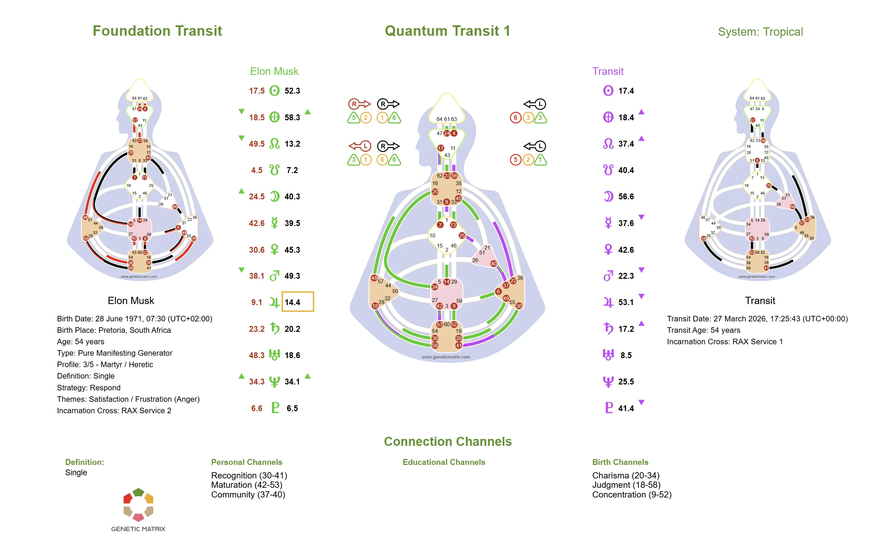

The neutrino stream carries a constant flow of planetary programming that conditions everyone in real time. Learn how transiting planets activate Gates and Lines and shape the collective field.
In Human Design, transits represent the current planetary positions and the Gates they activate in realtime. The neutrino stream, a flow of subatomic particles passing through everything, carries the imprint of each planet's position. This creates a constantly shifting field of conditioning that affects everyone on the planet, regardless of their individual design.
Transits do not change your chart. Your natal design is fixed. Instead, transits create temporary activations that overlay your chart, potentially defining Centers, creating channels, and activating Gates that are not part of your birth configuration. Understanding transits helps you recognize when external conditioning is influencing your experience.
The Current Planetary Program
The transit field is the set of planetary positions at any given moment. Just as your birth chart captures a snapshot of the planetary activations present at the time you were born, the transit field captures what is happening now. Every planet in the transit field activates a specific Gate and Line, creating a collective program that conditions everyone simultaneously.
Temporary Definition
When a transiting planet activates a Gate that connects to one of your natal Gates, it can temporarily complete a channel and define Centers that are normally open or undefined in your design. This temporary definition brings experiences and pressures that are not consistently part of your fixed makeup. Recognizing transit-created definition helps you distinguish between what is yours and what comes through conditioning.
The Dominant Daily Theme
The Sun moves through each Gate approximately every 5.7 days. Because the Sun accounts for a large share of the neutrino stream, its transit position sets the dominant collective theme at any given time. When the transiting Sun activates a Gate in your chart, that theme often becomes especially prominent in your experience during that period. As the Sun moves through each Line over the course of those days, it also conditions the daily theme for everyone.
Emotional and Motivational Shifts
The Moon transits through each Gate roughly every 10–11 hours, creating rapid shifts in the collective emotional and motivational backdrop. These transits are subtle but frequent and are often experienced as brief changes in mood, feeling, or drive.
From Hours to Decades
Each planet moves through the Gates and Lines at a different speed. The Moon changes Gates rapidly and moves through Lines every couple of hours, while the Sun spends about 5.7 days in each Gate and changes Lines roughly once per day. Mercury, Venus, and Mars move through Gates and Lines over days to weeks. The outer planets, Jupiter, Saturn, Uranus, Neptune, and Pluto, can remain in a single Gate for months or even years while still progressing through the Lines within that Gate, creating sustained background conditioning.
Generational Conditioning
The slow-moving outer planets shape the broader background of the collective field. Because their transits unfold over extended periods, they influence generational experience, cultural shifts, and the larger themes that define an era.
Collective and Personal Definition
When two transiting planets activate both Gates of a channel at the same time, that channel becomes defined in the global transit field as an educational theme. When a transiting Gate connects with one of your natal Gates, it creates a personal theme through temporary definition. This may be experienced as a passing influence, a significant encounter with another person, or a longer developmental process when slower-moving planets are involved.
Awareness, Not Prediction
Transits are not meant for prediction or fortune-telling. In Human Design, their value lies in awareness. By understanding what the transit field is activating, you can recognize when your behavior, mood, or decisions may be influenced by external conditioning rather than your own consistent design. This awareness supports a deeper experiment with Strategy and Authority.
Note
Transits are the conditioning field that affects everyone. They do not override your design. Your Strategy and Authority remain your primary tools for navigation, regardless of what the transit field is doing.
A transit overview chart shows the current planetary field and how it is activating Gates, Lines, channels, and temporary definition in real time. It offers a visual way to understand how the collective program is interacting with your design.

Example of a Human Design transit overview chart. Click to enlarge.
Transits are the current planetary positions and the Gates and Lines they activate in real time. The neutrino stream carries a constant flow of planetary programming that conditions everyone simultaneously. Transits create temporary activations that overlay your natal chart and can create definition that is not part of your fixed design.
No. Your natal chart is fixed and does not change. Transits create temporary conditioning that overlays your design. When a transiting planet activates a Gate that connects to one of your natal Gates, it can temporarily complete a channel and define Centers that are normally open or undefined.
The Sun transit has the greatest day-to-day impact because the Sun accounts for a large share of the neutrino stream. It moves through each Gate in about 5.7 days and sets the dominant collective theme. The slower outer planets create longer background themes that can remain active for months or years.
Transit speed varies by planet. The Moon moves quickly, the Sun changes Gates about every 5.7 days, Mercury, Venus, and Mars move over days to weeks, and the outer planets can remain in a Gate for months or years. All planets also move through the Lines within each Gate at their own pace.
Yes. Genetic Matrix provides real-time transit tools that show the current planetary positions, the Gates and Lines being activated, and how the transit field interacts with your natal chart. This lets you see when temporary definition is being created in your design.
Understand the major planetary return cycles that mark critical phases of growth and transformation.
Learn what each planet means in Human Design and how they activate Gates.
When two gates connect, a channel is formed. Discover all 36 channels and the life force they carry.
Get Plus, Advanced, or Pro to explore how the current transit field is conditioning your BodyGraph in real time, with deeper transit tools available in Advanced and Pro.
Get Plus, Advanced, or Pro →